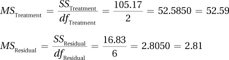
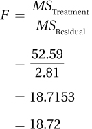
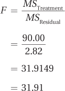

11.2 Calculating One-Way, Repeated-Measures ANOVA
Step 1 Pick a Test
Dr. King’s ADHD/distraction study compares the means of three samples, so it calls for an ANOVA to analyze the data. Because there is only one explanatory variable (time), it will be a one-way ANOVA. There are three levels of the explanatory variable— pre-treatment, post-treatment, and follow-up—so there are three groups. This is a longitudinal study in which the same participants are being assessed at three points in time. This means the samples are dependent. The dependent variable (level of distraction) is measured at the interval level, so a mean for each group can be calculated. Comparing the means of three dependent samples calls for a one-way, repeated-measures ANOVA.
Step 2 Check the Assumptions
Assumptions for the one-way, repeated-measures ANOVA are similar to those for the paired-samples t test: (1) each sample is a random sample from its population, (2) cases within samples are independent and don’t influence each other, and (3) the dependent variable is normally distributed in the population. There is a fourth assumption, which is beyond the scope of this book to assess. It is called the sphericity assumption, and it is a form of the homogeneity of variance assumption: If difference scores were calculated, would variability be the same in each set of difference scores?
387

Dr. King makes the following evaluation of the first three assumptions.
Random samples. There is no evidence that the sample is a random sample of children with ADHD, so this assumption is violated. However, the assumption is robust to violation, so the child psychologist can proceed. He will need to be careful about the population to which the results are generalized.
Independence of observations. There is no evidence that the cases within a group influence each other, so this assumption is not violated.
Normality. Dr. King assumes that distraction scores are normally distributed in the larger population of people with ADHD.
Only the random samples assumption is violated (and it’s robust to violation), so Dr. King can proceed with the one-way, repeated-measures ANOVA.
Step 3 List the Hypotheses
For a one-way, repeated-measures ANOVA, the null hypothesis states that all the population means are the same. The alternative hypothesis states that at least one population mean is different from at least one other. As with between-subjects one-way ANOVA, the null hypothesis is easy to state using mathematical symbols, but not the alternative hypothesis, so words are used to express the alternative hypothesis. For the ADHD/level of distraction data with three samples, the null and alternative hypotheses are
H0: µ1 = µ2 = µ3.
H1: At least one population mean is different from at least one of the others.
Step 4 Set the Decision Rule
To set the decision rule with repeated-measures ANOVA, Dr. King needs to find Fcv, the critical value of F.
388
As with the other tests we’ve covered up to this point, to find Fcv, a researcher needs (a) to set the alpha level on the basis of willingness to make a Type I error and (b) to know the degrees of freedom for the numerator and the denominator of the F ratio. These are then used in Appendix Table 4 to find Fcv. (One thing a researcher doesn’t need to worry about is whether to do a one-tailed or a two-tailed test—ANOVA is always nondirectional.)
In a one-way, repeated-measures ANOVA, the numerator, where the effect of the independent variable is isolated, is called the treatment effect and the denominator is called the residual effect. The formulas for finding degrees of freedom treatment (dfTreatment) and degrees of freedom residual (dfResidual) for a one-way, repeated-measures ANOVA are given in Equation 11.1. Equation 11.1 also shows how to calculate two other degrees of freedom that will be necessary to complete the ANOVA summary table for repeated-measures ANOVA: (1) degrees of freedom subjects, dfSubjects, and (2) degrees of freedom total, dfTotal.
Equation 11.1 Degrees of Freedom for a One-Way, Repeated-Measures ANOVA
dfSubjects = n − 1
dfTreatment = k − 1
dfResidual = dfSubjects × dfTreatment
dfTotal = N − 1
where dfSubjects = degrees of freedom for variability due to subjects
dfTreatment = degrees of freedom for the treatment effect
dfResidual = degrees of freedom for residual variability
dfTotal = degrees of freedom total
n = sample size per group
k = number of groups
N = total number of observations (n × k)
Dr. King sets alpha at .05. He is willing to run a 5% chance of making a Type I error. To calculate degrees of freedom for the level of distraction/ADHD data, Dr. King needs to know n = 4, k = 3, and N = 12. That is, there are four cases per group and three groups, for a total of 12 cases. These three values are then used in Equation 11.1 to calculate the 4 degrees of freedom:
dfSubjects = n − 1
= 4 − 1
= 3
dfTreatment = k − 1
= 3 − 1
= 2
389
dfResidual = dfSubjects × dfTreatment
= 3 × 2
= 6
dfTotal = N − 1
= 12 − 1
= 11
In this example, note that 3 + 2 + 6 = 11. For one-way, repeated-measures ANOVA, dfSubjects + dfTreatment + dfResidual = dfTotal. This means that the total degrees of freedom in a repeated-measures ANOVA are divided into subcomponents for variability due to individual differences (dfSubjects), due to the explanatory variable (dfTreatment), and remaining variability (dfResidual).
To find the critical value of F, the only degrees of freedom needed are dfTreatment and dfResidual, the numerator and the denominator, respectively, of the F ratio. For the level of distraction data, those degrees of freedom are 2 and 6. Using Appendix Table 4 with α = .05, Dr. King finds the intersection of the column for 2 degrees of freedom and the row with 6 degrees of freedom and arrives at Fcv = 5.143. Hence, the decision rule for the ADHD/level of distraction data for a one-way, repeated-measures ANOVA is:
If F ≥ Fcv of 5.143, reject H0.
If F < Fcv of 5.143, fail to reject H0.
Figure 11.4 uses Fcv to show the sampling distribution of F with the rare and common zones marked. If the value of F that Dr. King will calculate in the next step falls in the rare zone or on the line that separates the rare zone from the common zone, then (a) the null hypothesis is rejected, (b) the alternative hypothesis is accepted, (c) the results are called statistically significant, and (d) there is reason to believe that at least one difference exists among the population means. If F falls in the common zone, then (a) Dr. King will have failed to reject the null hypothesis, (b) the results will be called not statistically significant, and (c) he concludes there is not enough evidence to conclude any difference exists among any of these population means.
390
Step 5 Calculate the Test Statistic
To calculate the F ratio, a researcher completes an ANOVA summary table. Table 11.2 is a guide to completing the cells in an ANOVA summary table for one-way, repeated-measures ANOVA. Though column labels in this table are identical to the ones for between-subjects, one-way ANOVA, the sources of variability (the rows) are different.
First column: Source of variability. In the summary table, the sources of variability are listed in the first column in this order: variability due to subjects, variability due to treatment, residual variability, and total variability. Residual variability is the portion of total variability that is not accounted for by variability due to subjects or treatment.
Second column: Sum of squares. Each source of variability is represented by a sum of squares in the second column. In order to focus on understanding repeated-measures ANOVA and not get slowed down by calculations, the necessary sums of squares—SSSubjects, SSTreatment, SSResidual, and SSTotal — will be supplied in this chapter. (For those who wish to learn how to calculate sums of squares, or who have instructors who wish them to learn, formulas are given in an appendix at the end of the chapter.)
Third column: Degrees of freedom. The third column shows the degrees of freedom for each source of variability. The degrees of freedom are calculated through Equation 11.1.
Fourth column: Mean squares. In the fourth column, mean squares for the treatment effect and the residual effect are calculated. These are abbreviated MSTreatment and MSResidual. They are calculated by dividing a sum of squares by its degrees of freedom.
Fifth column: F ratio. In the fifth column, the F ratio for the effect of treatment is calculated by dividing the numerator term (MSTreatment) by the denominator term (MSResidual).
391
The sums of squares for the ADHD/distraction data follow:
SSSubjects = 308.67
SSTreatment = 105.17
SSResidual = 16.83
SSTotal = 430.67
Then Dr. King retrieves the degrees of freedom he calculated earlier and enters them in the summary table:
dfSubjects = 3
dfTreatment = 2
dfResidual = 6
dfTotal = 11
The next step is to calculate the two mean squares, MSTreatment and MSResidual. To do so, Dr. King divides each sum of squares by its respective degrees of freedom:

Finally, Dr. King divides the mean square for the numerator (MSTreatment) by the mean square for the demoninator (MSResidual) to find the F ratio:

At this point, the calculation phase for one-way, repeated-measures ANOVA is over. The complete ANOVA summary table for the ADHD/distraction study is shown in Table 11.3. The next section of the chapter, after more practice with calculation, focuses on interpreting the results.

392
Worked Example 11.1
Imagine that Dr. Agosto, an orthopedic surgeon, decided to test the effectiveness of the standard surgical treatment for back pain. She found 30 people with chronic back pain and matched them into groups of three on the basis of age, sex, number of years of pain, and degree of physical impairment. She then randomly assigned members of each group to receive one of three different levels of treatment: (1) standard surgery and physical therapy, (2) sham surgery and physical therapy, or (3) physical therapy alone. (In sham surgery, the patient undergoes anesthesia and has an incision made in his or her back, but is sewn up without any real surgical intervention.) This was a double-blind study for the patients who received surgery—they did not know if they received standard surgery or sham surgery, and neither they did the medical staff who provided follow-up care. After receiving surgery or no surgery, all patients received physical therapy for six months. At this point, the outcome was measured on a quality-of-life scale. Higher scores mean that a person has a better quality of life and is more able to enjoy the regular activities of daily living.
A Common Question
Q Is sham surgery ever really used as a control group?
A Yes. Sham surgery controls for the placebo effect of having a surgical procedure. As long as informed consent is used, there is nothing unethical about using it in a study.
Figure 11.5 shows the outcome of the experiment. Patients in Group 1, real surgery, had a better outcome than the sham surgery patients in Group 2, or the physical therapy patients in Group 3. But, the differences are slight: MRealSurgery = 51.00, MShamSurgery = 48.00, and MPhysicalTherapy = 45.00. Dr. Agosto suspects that the differences between groups could be explained with sampling error and don’t represent an advantage of surgery. She’ll need a statistical test to find out.
393
Step 1 Pick a Test
Dr. Agosto is comparing the means of three groups (real surgery vs. sham surgery vs. physical therapy). This calls for an ANOVA. There is only one independent variable (type of treatment), so this is a one-way ANOVA. The cases are made up of matched participants—each one assigned to one type of treatment, so the groups are dependent. That means Dr. Agosto is doing a one-way, repeated-measures ANOVA.
Step 2 Check the Assumptions
Random samples. It was not stated that the 30 participants were a random sample from the population of people with back pain, so it is unlikely they are. Almost certainly the sample is a convenience sample and the random samples assumption has been violated. The random samples assumption is robust, though, so Dr. Agosto can proceed with the one-way, repeated-measures ANOVA. She will just need to be cautious about the population to which she generalizes the results.
Independence of observations. This assumption is about independence within a group, not between groups. Within groups, there is no connection between participants and how one participant performs does not influence the performance of others. Each participant participates only once. This assumption is not violated.
Normality. Dr. Agosto, from her review of the literature, knows that quality-of-life scores are normally distributed when quality of life is measured in the population of people receiving treatment for back pain.
Only the random samples assumption is violated, which is robust, so Dr. Agosto can proceed with the planned one-way, repeated-measures ANOVA.
Step 3 List the Hypotheses
H0: µ1 = µ2 = µ3.
H1: At least one of the three population means is different from at least one of the others.
Step 4 Set the Decision Rule
To determine the decision rule, Dr. Agosto needs to find the degrees of freedom for the numerator in the F ratio (the treatment effect) and for the denominator (the residual effect). Later on, to complete the ANOVA summary table, she’ll need to know the other 2 degrees of freedom—subjects and total—so she might as well use Equation 11.1 to calculate all the degrees of freedom now. To do so, she’ll need to know the number of cases per group (n = 10), the number of groups (k = 3), and the total number of observations (N = 30):
dfSubjects = n − 1
= 10 − 1
= 9
dfTreatment= k − 1
= 3 − 1
= 2
394
dfResidual = dfSubjects × dfTreatment
= 9 × 2
= 18
dfTotal = N − 1
= 30 − 1
= 29
Knowing that dfTreatment (the numerator degrees of freedom) = 2 and dfResidual (the denominator degrees of freedom) = 18, Dr. Agosto can look in Appendix Table 4 to find the critical value of F. But first, she has to decide how willing she is to make a Type I error.
A Type I error occurs when the null hypothesis is mistakenly rejected. In this study, that would mean concluding there is a treatment effect when such is not the case. Dr. Agosto wants to avoid this error, so she sets alpha at .01, not .05. This means that there is a 1% chance of this error occurring, not a 5% chance.
Using Appendix Table 4, Dr. Agosto finds Fcv = 6.013. Figure 11.6 shows the sampling distribution of F with the rare zone marked. The decision rule is:
If F ≥ 6.013, reject H0.
If F < 6.013, fail to reject H0.
Step 5 Calculate the Test Statistic
To calculate the test statistic, Dr. Agosto calculated the sums of squares using the formulas provided in the appendix at the end of this chapter. She calculated:
SSSubjects = 2,193.33
SSTreatment = 180.00
SSResidual = 50.67
SSTotal = 2,424.00
Next, she uses the degrees of freedom for treatment, 2, and for the residual, 18, to calculate MSTreatment and MSResidual.
395

Finally, to find the F ratio, the surgeon divides the numerator term (MSTreatment) by the denominator term (MSResidual):

The complete ANOVA summary table for the back surgery/quality-of-life one-way, repeated-measures ANOVA can be seen in Table 11.4. In the next section, we’ll see how Dr. Agosto might interpret her results.
Practice Problems 11.2
Apply Your Knowledge
11.04 What test should be used to analyze these two studies? Select from the single-sample z test; single-sample t test; independent-samples t test; paired-samples t test; between-subjects, one-way ANOVA; and one-way, repeated-measures ANOVA.
High school seniors who plan to (i) not go to college, (ii) go to a community college, or (iii) go to a four-year college are matched in terms of intelligence. Ten years later, the three matched groups are compared in terms of mean annual income.
A random sample of people with a family history of Alzheimer’s disease is compared to a random sample of people from the general population in terms of their mean score on an interval-level measure of fear of dementia.
11.05 List the assumptions for a one-way, repeated-measures ANOVA.
11.06 State the hypotheses for a one-way, repeated-measures ANOVA.
11.07 There’s a sample of 12 cases that is measured on an interval-level variable at four points in time. The data will be analyzed with a one-way, repeated-measures ANOVA.
What are the numerator degrees of freedom for the F ratio?
What are the denominator degrees of freedom for the F ratio?
11.08 If dfTreatment = 3, dfResidual = 21, and α = .05, what is the decision rule?
11.09 Given SSSubjects = 123.00, SSTreatment = 216.00, SSResidual = 410.40, SSTotal = 749.40, dfSubjects =19, dfTreatment = 3, dfResidual = 57, and dfTotal = 79, complete a one-way, repeated-measures ANOVA summary table.